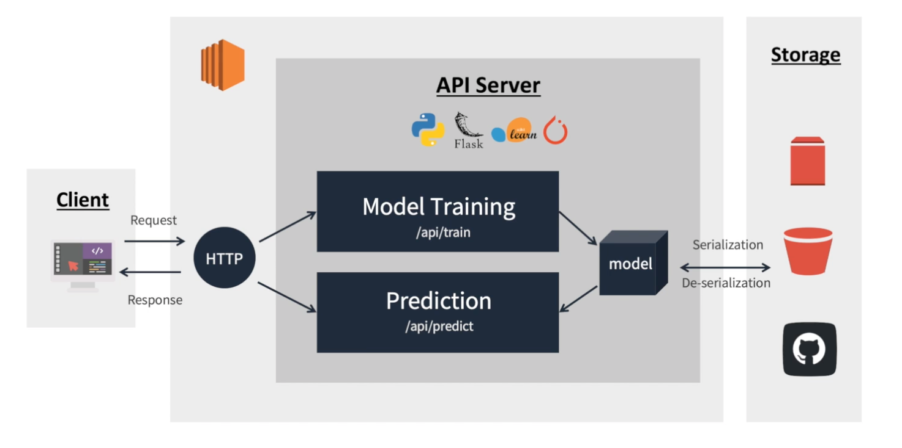
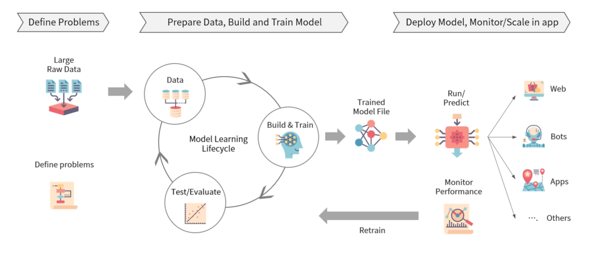
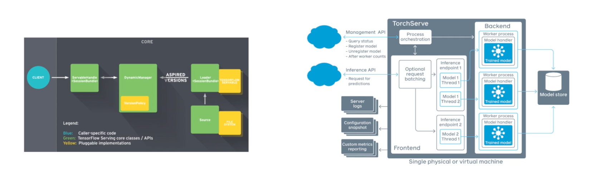

이번 글에서는 프로그래머스 인공지능 데브코스의 4주차 강의에 대한 정리입니다.
지금까지 기초 파이썬과 함께 데이터를 다루는 Pandas, Numpy, Matplotlib 등을 학습했습니다.
이번 주에는 앞서 배웠던 내용들을 바탕으로 Flask라는 프레임워크와 함께 데이터를 EDA 하는 방법과,
AWS 클라우드를 활용하여 머신러닝 모델을 Serving 하는 API를 만드는 방법에 대해 배웁니다.
지금까지는 모델을 만드는 방법만을 학습했는데, 실제 서비스를 위해 필요한 내용들을 배울 수 있을 것 같아 기대가 됩니다.
1. Web Application with Flask
Flask 설치하기
- 지금까지 학습한 것
- Data Structure, Algorithm
- Numpy, Pandas, Matplotlib, EDA
- Calculus, Linear Algebra, Probability & Statistics
- Flask: Python 기반 마이크로 웹 프레임워크
- 가상환경 설치하기
1
2
3
4
5
6
7
pip install virtualenv # 가상환경을 만들 수 있는 virtualenv 패키지 설치
virtualenv venv # 가상환경 이름이 venv인 가상환경 만들기
source venv/bin/activate # venv라는 가상환경에 진입하기 (mac OS)
./venv/Scripts/activate.bat # venv라는 가상환경에 진입하기 (Windows OS)
pip freeze # 현재 가상환경에 설치된 패키지 확인
pip install flask # 들어온 가상환경에 flask 패키지를 설치
인터넷과 웹
- 인터넷 (Internet): 전 세계 컴퓨터를 하나로 합치는 거대한 통신망
- 웹 (Web): 인터넷에 연결된 사용자들이 정보를 공유할 수 있는 공간
- Web의 동작 방식
- 웹은 클라이언트와 서버 사이의 소통
- 클라이언트가 서버에 정보를 요청 (HTTP Request)
- 서버는 이 요청받은 정보에 대한 처리를 진행
- 서버가 클라이언트에게 요청에 대해 응답 (HTTP Response)
- 웹은 클라이언트와 서버 사이의 소통
REST API
- API (Application Programming Interface): 프로그램들이 서로 상호작용 하는 것을 도와주는 매개체
- RESTful (Representational State Transfer)
- 웹 서버가 요청을 응답하는 방법론 중 하나
- 데이터가 아닌, 자원 (Resource)의 관점으로 접근
- 클라이언트의 Context를 서버에서 유지하지 않음 (Stateless - 무상태성)
- GET 요청이 들어왔다고 해서, 서버 입장에서 요청 받지 않았던 POST 요청을 실행하지 않음
- GET 요청이 들어왔다면, GET 요청에 대한 Response만 보냄
- HTTP URI를 통해 자원을 명시하고, HTTP Method를 통해 해당 자원에 대한 CRUD를 진행
- HTTP Method: GET, POST, PUT, DELETE
- Postman: API를 테스트 할 수 있음
2. 클라우드를 활용한 머신러닝 모델 Serving API 개발
클라우드 기초
- 과거에 인터넷 환경에서 서비스를 제공하려면 서비스 호스팅에 필요한 모든 것을 직접 구축했어야 함
- 하지만 서버를 직접 구축 및 운영하는 자원과 인력 비용이 크고, 변화에 대응하는 것이 어려움
- 따라서 서버 운영에 필요한 공간, 네트워크 등을 제공하는 IDC (Internet Data Center) 서비스 등장
하지만 IDC 역시 서버 임대를 통해 자원을 효율적으로 이용하고 비용 절감이 가능하지만, 유연성이 떨어진다는 한계
- 기존의 서버 구축 및 운영 방식으로는 적절한 시간에 필요한 서비스를 사용자에게 제공하기 힘들었음
- 사용자가 늘면서 다양한 서비스를 제공하면서 필요할 때, 필요한 만큼 서버를 증설하기 원하는 온디맨드 수요 증가
ex) 접속량이 늘어서 컴퓨팅 수요 증가시에 오토 스케일링 필요, 평상 시에 사용하지 않는 유휴 자원은 비용에서 제거
- 클라우드 컴퓨팅 (Colud Computing)은 언제 어디서나 필요한 만큼의 컴퓨팅 자원을 필요한 시간만큼 활용 가능
- 아마존이 2006년 클라우드를 통한 저장공간 및 연산 자원 제공 서비스인 S3과 EC2를 개시하면서 등장
- 클라우드를 통해 빅데이터 수집, 저장, 분석을 위한 방대한 컴퓨팅 자원과 인공지능 개발을 위한 IT 환경 마련 가능
- 속도, 접근성, 확장성, 생산성, 보안 및 안정성, 측정 가능성 등의 장점을 갖음
- 도커와 같은 가상화 기술을 통해 GPU 활용과 소프트웨어 설치 및 배포 등의 작업에 비용과 시간 절감
- 클라우드 컴퓨팅 운용 모델: 구축 및 배포 유형에 따라
Public, Private, Hybrid로 구분- Public: 모든 인프라와 IT 기술을 클라우드에서 사용, IT 관리 인력 및 인프라 구축 비용 없는 경우 유용
- Private: 고객이 자체 데이터센터에서 직접 클라우드 서비스를 구축, 보안이 좋고 커스터마이제이션 가능
- Hybrid: 고객이 핵심 시스템은 내부에 두면서 외부 클라우드 활용, Public 경제성과 Private 보안성 활용
- 클라우드 서비스 제공 방식에 따라서
IaaS, PaaS, SaaS형태로 구분- On-Premises: Owning a car
- IaaS: Leasing a car
- PaaS: Taking a taxi
- SaaS: Going by bus
- 클라우드 서비스 제공 사업자: AWS, GCP, Azure, NCP (네이버 클라우드 플랫폼) 등
API to serve ML model
- Architecture: AWS EC2와 Flask 기반 모델 학습 및 추론을 요청, 응답하는 API 서버 개발

- Interface: 사용자는 기계와 소프트웨어를 제어하기 위해 인터페이스를 정해진 메뉴얼에 따라 원하는 경험 획득
- API (Application Programming Interface): 기계&기계, 소프트웨어&소프트웨어 커뮤니케이션을 위한 인터페이스
- RESTful API for ML/DL Model Interface
- RESTful API: REST 아키텍처를 따르는 API
- 데이터나 정보의 교환, 요청 등을 위한 인터페이스를 REST 아키텍쳐를 따라 구현한 API
- 데이터 값을 담아 요청하고, 모델이 추론한 결과에 대한 return을 json 형태로 반환하도록 설계
- RESTful API는 요청 메시지만 봐도 어떤 내용으로 되어 있는지 알 수 있도록 표현
- HTTP URI를 통해 자원을 명시하고, HTTP Method를 통해 필요한 연산을 요청하고 반환하는 API
- Practical process of machine learning
- 문제 정의, 데이터 준비, 모델 학습 및 검증, 모델 배포, 모니터링 등의 과정을 통해 ML/DL 모델 적용

- Model Serving
- 학습된 모델을 REST API로 배포하기 위해 학습된 모델의 Serialization과 웹 프레임워크를 통해 배포 준비 필요
- 모델을 서빙할 때는 학습 시의 데이터 분포나 처리 방법과의 연속성 유지 필요
- 모델을 배포하는 환경에 따라 다양한 Serving Framework를 고려하여 활용
- Model Training -> Serializing Model -> Serving Model
- Serialization & De-serialization: 학습한 모델의 재사용 및 배포를 위해 저장하고 불러오는 것
- Serialization을 통해 ML/DL 모델 object를 disk에서 불러와 어디든 전송하고 불러올 수 있는 형태로 변환
- De-serialization을 통해 파이썬 혹은 다른 환경에서 모델을 불러와서 추론 및 학습에 사용
- 모델을 배포하는 환경을 고려하여 환경에 맞는 올바른 방법으로 Serialization 해야지 De-serialization 가능
- Model Serving을 위한 다양한 Frameworks: TensorFlow serving, TorchServe, TensorRT
- Flask 같은 웹 프레임워크는 클라이언트로부터 요청을 처리하기 위해 주로 사용
- 별도의 모델 추론을 위한 API 서버를 운용하여 내부 혹은 외부 통신을 통해 예측, 추론값 반환
- 대용량 데이터 배치 처리와 딥러닝 모델 활용이 늘면서 multi node & GPU 환경에서 안정적 모델 서빙을 위함

3. 데이터 씹고 뜯고 맛보고 즐기기 - EDA
EDA
- 데이터 그 자체만으로부터 인사이트를 얻어내는 접근법
- EDA의 Process
- 분석의 목적과 변수 확인
- 데이터 전체적으로 살펴보기 (결측치, 상관관계 확인 등)
- 데이터의 개별 속성 파악하기 (각 feature에 대해 특징 확인 등)
- 타이타닉 데이터를 통한 EDA
- 각 데이터는 어떤 자료형을 가지고 있는지?
- 데이터에 결측치는 없는지, 있다면 어떻게 해야 할지?
- 데이터의 자료형을 바꿔줄 필요가 있는지 (범주형의 One-hot encoding)
- 데이터에 대한 가설 세워보기
- 가설을 검증하기 위한 증거를 찾아보기
4. EDA Project
5. Weekly Assignment
6. 4주차 돌아보기
- 기간: 2022. 10. 10 ~ 2022. 10. 15
데브코스가 시작한지 벌써 한 달이 지났다니 실감이 나지 않는 것 같다. 시간이 정말 빠르다. 퇴사 후에 스스로의 시간을 경영하는 방법을 배우고 있는 것 같은데, 여러가지 계획들과 해야 할 것들을 고민하는 것 역시 좋다고 생각한다. 하지만 가장 중요한 것은 생각하는 것들을 직접 행하는 것이 가장 중요할 것이다. 생각만 하지 말고, 말만 하지 말고 그것들을 실천에 옮길 수 있는 사람이 되자. 기존과 다르게 스스로에게 주어진 많은 시간 속에 행복해하며, 이것도 하고, 저것도 하자는 거창한 계획들 속에서 가장 중요한 것은 그것을 행하는 것이다.
데브코스를 진행하면서, 개인적으로 관심사가 비슷한 분들과 함께 사이드 프로젝트도 진행을 해보고 있다. 기술이 가지는 가치 중 하나는, 우리가 불편했지만 그냥 넘겼던 것들에 대해 다시 생각해보면서 기술로써 그 불편함을 해결할 수 있다는 것 같다. 실제로 우리가 평소에 사용하고 있는 대부분의 서비스들은 많은 부연 설명 없이 아주 간단하게 컨셉을 설명할 수 있는 서비스들이다. 이렇듯 이 사이드 프로젝트에서도 우리가 평소에 느꼈던 문제를 공감하고, 그것들을 배우고 있고, 배웠던 기술들을 활용하여 해결해보고자 한다.
또 이와 관련하여 공모전도 함께 참여할 계획을 가지고 있는데, 차근히 잘 준비하고 이 블로그에서 또 해당 내용들을 열심히 차근히 기록해보도록 하겠다. 다음 주도 새로운 배움으로 가득하길 기대하자!!
출처: 프로그래머스 인공지능 데브코스 4기 4주차 강의 -> 강의 내용 정리 깃허브 링크